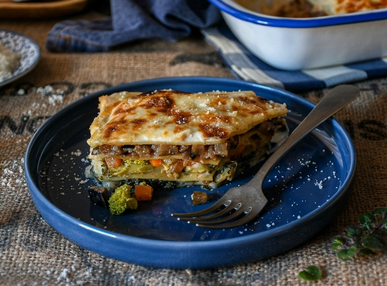

LASAÑA VEGETARIANA

DESCRIPCION
La lasaña de verduras admite todo tipo de rellenos y combinaciones, así que es fácil acertar y que guste a todos.
Desde las verduras más comunes y populares, hasta las más sorprendentes, si equilibramos bien los sabores de las escogidas
conseguimos un plato de matrícula de honor.
INGREDIENTES (Para 4 personas)
- Champiñones 12
- Espinaca fresca 75 g
- Zanahoria pequeña 2
- Brócoli 0.5
- Cebolla 1
- Berenjena 0.5
- Salsa de tomate o tomate frito 50 g
- Salsa bechamel 500 ml
- Láminas de pasta para lasaña precocidas 10
- Queso Parmesano rallado 50 g
- Sal Pimienta negra molida
PASOS
- Tiempo total
1 h
- Elaboración
30 m
- Cocción
30 m
Esta es una lasaña en la que las láminas de pasta se alternan con dos salsas diferentes, de tomate y bechamel, y tres capas de relleno distintas: champiñones y espinacas, zanahoria y brócoli y cebolla y berenjena. El orden en que colocamos las capas de relleno no afecta al resultado, así que podéis variarlo al gusto.
- Relleno de champiñones y espinacas
Lavamos los champiñones y los secamos bien. Troceamos y salteamos en una sartén con un poco de aceite de oliva virgen extra. En cuanto empiecen a cambiar de color, salpimentamos, añadimos las espinacas y tapamos. Dejamos que se cuezan ambos ingredientes con el calor residual.
- Relleno de zanahoria y brócoli
Lavamos bien las zanahorias y el brócoli. Cortamos la zanahoria en pequeños dados y picamos el brócoli (tronco incluido). Calentamos un poco de aceite de oliva virgen extra en una sartén y rehogamos ambas verduras juntas a fuego suave, salpimentadas al gusto, hasta que estén al dente.
- Relleno de cebolla y berenjena
Pelamos y picamos la cebolla. Lavamos la berenjena y cortamos en pequeños dados. Calentamos un poco de aceite de oliva virgen extra en una sartén y rehogamos ambas verduras (salpimentadas al gusto) al mismo tiempo, a fuego suave, hasta que estén bien tiernas y cocidas.
- Montaje de la lasaña de verduras
Cubrimos la base de una fuente de horno rectangular con un par de cucharadas de salsa de tomate o tomate frito y un poco de salsa bechamel. Colocamos encima dos láminas de pasta. Sobre ellas una capa del relleno de champiñones y espinacas y un poco de salsa (bechamel o tomate, al gusto). Cubrimos con otras dos láminas de pasta, una capa de del relleno de zanahoria y brócoli y un poco más de salsa. Terminamos con otra capa de pasta, el último relleno, más salsa y una última capa de pasta.
Esparcimos el resto de la salsa bechamel por toda la superficie, dejando que escurra por los lados, y espolvoreamos con el Parmesano rallado. Cocemos en el horno, precalentado a 200º C, durante unos 20 minutos o hasta que la superficie esté ligeramente dorada. Servimos inmediatamente.